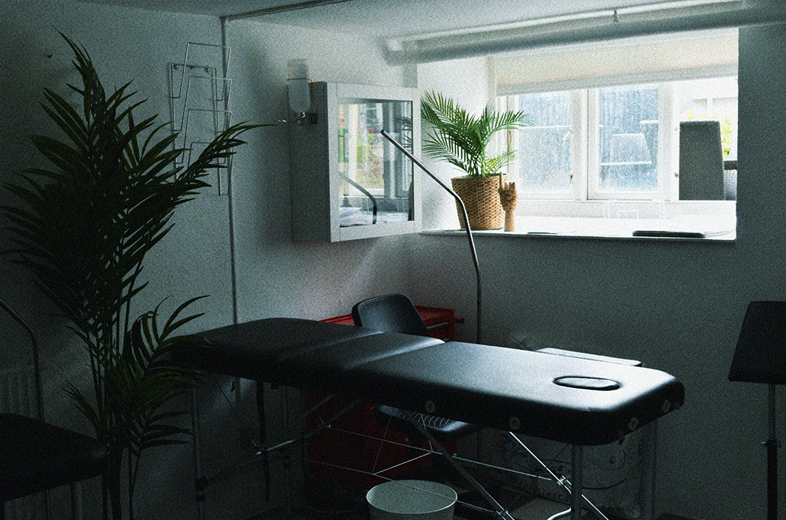

Hvor det hele startede...
Efter en rejse i Costa Rica vendte Rass hjem med visionen om sin egen tatovørbutik. Livsstilen og kulturen var det, der dragede Rass, som han gerne ville genskabe på sin egen måde i Aarhus.

Vores værdier
Hos Nord for Paradis ved vi, hvor personligt og sårbart det er at få en tatovering, og derfor vil vi gerne skabe så trygt og behageligt et rum som overhovedet muligt for vores skønne kunder. Vi går meget op i hygiejne, og forsikrer vores kunder om, at vi opretholder alle retningslinjer.

Drømmen
Nord for Paradis bliver ved med at vokse, og lige nu er fokuset på at skabe en hyggelig og behagelig atmosfære i butikken, hvor man altid føler sig tryg og set. Hos os er det vigtigt, at man føler sig i selskab med venner, når man træder ind i butikken.